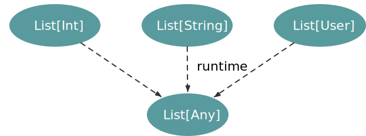
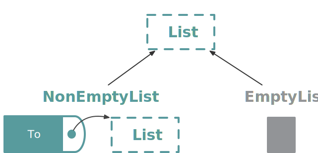

background-image: url(img/fp-tower/website-background.svg) class: center, middle, white .title[Generic functions <br> part 2] --- # 1. Parametric functions accept .hl[ALL] types <br> ```scala def map[From, To](list: List[From], update: From => To): List[To] ``` <br> ```scala map[String, Int](List(...), ...) map[User, Address](List(...), ...) ``` --- # 2. All types must be treated .hl[EQUALLY] <br> <br> ```scala def map[From, To](list: List[From], update: From => To): List[To] = list match { case ints : List[Int] => ... case strings: List[String] => ... case users : List[User] => ... case _ => ... } ``` --- # All types must be treated .hl[EQUALLY] <br> .pull-left[ ```scala def format[A](value: A): String = value match { case x: String => x.toLowerCase case x: Double => truncate(2, x) case _ => "N/A" } ``` ] .pull-right[ ```scala format("Blue") // res0: String = "blue" format(123.123456) // res1: String = "123.12" format(true) // res2: String = "N/A" ``` ] --- class: medium-code # Why? Type erasure <br> .large2-left[ ```scala def format[A](value: A): String = value match { case x: String => x.toLowerCase case x: Double => truncate(2, x) case x: List[String] => x.map(_.toLowerCase).mkString(",") case x: List[Double] => x.map(truncate(2, _)).mkString(",") case _ => "N/A" } ``` ] .small2-right[ ```scala format("Blue") // res4: String = "blue" format(123.123456) // res5: String = "123.12" format(true) // res6: String = "N/A" format(List("Hello", "World")) // res7: String = "hello,world" ``` ] -- <br><br><br><br><br><br><br><br><br> ```scala format(List(123.123456, 0.1234)) // java.lang.ClassCastException: class java.lang.Double cannot be cast to class java.lang.String (java.lang.Double and java.lang.String are in module java.base of loader 'bootstrap') // at repl.Session$App3$$anonfun$format$1.apply(generic-functions-part-2.html:58) // at scala.collection.immutable.List.map(List.scala:246) // at repl.Session$App3.format(generic-functions-part-2.html:58) // at repl.Session$App3$$anonfun$8.apply(generic-functions-part-2.html:83) // at repl.Session$App3$$anonfun$8.apply(generic-functions-part-2.html:83) ``` --- class: medium-code # Why? Type erasure <br> .forty-two-left[ ```scala def format[A](value: A): String = value match { case x: String => ... case x: Double => ... case x: List[String] => ... case x: List[Double] => ... case _ => ... } ``` ] .fifty-two-right[ ```scala def format[A](value: A): String = if(value.isInstanceOf[String]) ... else if(value.isInstanceOf[Double]) ... else if(value.isInstanceOf[List[String]]) ... else if(value.isInstanceOf[List[Double]]) ... else ... ``` ] --- class: medium-code # Why? Type erasure <br> .forty-two-left[ ```scala def format[A](value: A): String = value match { case x: String => ... case x: Double => ... case x: List[String] => ... case x: List[Double] => ... case _ => ... } ``` <br> ```scala List(1.5,2.0).isInstanceOf[List[String]] // res8: Boolean = true ``` ```scala // warning: fruitless type test: a value of type // List[Double] cannot also be a List[String] ``` ] .fifty-two-right[ ```scala def format[A](value: A): String = if(value.isInstanceOf[String]) ... else if(value.isInstanceOf[Double]) ... else if(value.isInstanceOf[List[String]]) ... else if(value.isInstanceOf[List[Double]]) ... else ... ``` <br>  ] --- class: medium-code # Why? Poor documentation <br> <br> ```scala def format[A](value: A): String ``` --- class: center, middle # Parametric polymorphism (`map`) # != # Ad hoc polymorphism (`format`) --- # How can we implement `map`? <br> ```scala def map[From, To](list: List[From], update: From => To): List[To] ``` -- .large-right[  ] -- <br> <br> .medium[ 1. Return `Nil` or 1. Must use `update` on input `list` ] --- # Does it compile? <br> ```scala def map[From, To](list: List[From], update: From => To): List[To] = list ``` --- # Does it compile? <br> ```scala def map[From, To](list: List[From], update: From => To): List[To] = list // error: type mismatch; // found : List[From] // required: List[To] // list // ^^^^ ``` --- # Does it compile? <br> ```scala def map[A](list: List[A], update: A => A): List[A] = list ``` --- # Does it compile? <br> ```scala def map(list: List[Int], update: Int => Int): List[Int] = List(1, 2, 3) ``` --- # How can we test `map`? <br> ```scala test("map"){ map(Nil, _ => ???) shouldEqual Nil map(List(1,2,3) , (x: Int) => ???) shouldEqual ??? map(List(1,2,3,4,5), (x: Int) => ???) shouldEqual ??? map(List("Hello", "World") , (x: String) => ???) shouldEqual ??? map(List("a", "b", "c", "d"), (x: String) => ???) shouldEqual ??? } ``` -- <br> .center[ ## All types must be treated in the same way ] --- # How can we test `map`? <br> ```scala test("map"){ map(Nil, _ => ???) shouldEqual Nil map(List(1,2,3) , (x: Int) => x + 1) shouldEqual List(2,3,4) map(List(1,2,3,4,5), (x: Int) => x + 1) shouldEqual List(2,3,4,5,6) map(List(1,2,3) , (x: Int) => x > 2) shouldEqual List(false,false,true) map(List(1,2,3,4,5), (x: Int) => x > 2) shouldEqual List(false,false,true,true,true) } ``` -- <br> .center[ ## All output elements must be produced by `update` ] --- # How can we test `map`? <br> <br> ```scala test("map"){ map(Nil, _ => ???) shouldEqual Nil map(List(1,2,3) , (x: Int) => x) shouldEqual List(1,2,3) map(List(1,2,3,4,5), (x: Int) => x) shouldEqual List(1,2,3,4,5) } ``` --- # How can we test `map`? <br> <br> ```scala test("map"){ map(Nil, _ => ???) shouldEqual Nil map(List(1,2,3) , identity) shouldEqual List(1,2,3) map(List(1,2,3,4,5), identity) shouldEqual List(1,2,3,4,5) } ``` <br> ```scala:silent object Predef { def identity[A](value: A): A = value } ``` --- # Property Based Testing (PBT) <br> <br> ```scala test("map"){ forAll((list: List[Int]) => map(list, identity) shouldEqual list ) } ``` --- # Summary <br> .large[ * More reusable * Caller decides which underlying type to use * Implementation must be generic * better documentation * less tests ] --- # Not everything in a language should be used <br> ```scala class Spaceship { private def autoDestroy(): Unit = println("Boom!") } val shuttle = new Spaceship() ``` ```scala shuttle.autoDestroy() // error: method autoDestroy in class Spaceship cannot be accessed as a member of App1.this.Spaceship from class App1 in object Session // shuttle.autoDestroy() // ^^^^^^^^^^^^^^^^^^^ ``` --- # Not everything in a language should be used <br> ```scala class Spaceship { private def autoDestroy(): Unit = println("Boom!") } val shuttle = new Spaceship() ``` ```scala val method = classOf[Spaceship].getDeclaredMethod("autoDestroy") method.setAccessible(true) ``` ```scala method.invoke(shuttle) // Boom! ```